DISPERTAPA KOTA BANDUNG
Beranda
Tentang Kami
Sejarah
Visi Misi
Struktur Organisasi
Tupoksi
Berita
Artikel
Galeri Foto
Program Kerja
Pelayanan
P r e s t a s i
V i d e o
Kontak Kami
Struktur Organisasi
Video
Jelang Natal dan tahun Baru, Dinas Pertanian Ketahanan Pangan Kota Bandung, Sidak ke Pasar
More Video
PET HEALTY DAYS
Berita Terkini
Puluhan Pasar Tradisional dan Retail di Kota Bandung Miliki Mini Labolatorium
02/01/2018
Sebanyak 1021 Petani Kota Bandung, Mendapat Kartu Tani Pupuk Bersubsidi
23/12/2017
Distan Bandung Kini Punya Mobil Lab Pendeteksi Makanan Berbahaya
08/12/2017
Dispangtan Kota Bandung Terus Jaga Stabilitas Harga Beras
07/12/2017
Miliki Mobil Mini Lab, Kini Dispangtan Kota Bandung Bisa Tes Halal di Pasar
06/12/2017
Jual Beras di Atas HET, Izin Pedagang Akan Dicabut
06/12/2017
Harga Telur dan Cabai di Pasar Sederhana Melonjak
06/12/2017
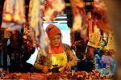
Pemkot Bandung Pastikan Stok Kepokmas Aman Saat Natal & Tahun Baru
06/12/2017
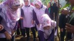
Manfaatkan 6 Hektare Lahan Kosong, Dharma Wanita Kota Bandung Tanam 3.000 Pohon
23/11/2017
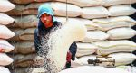
Ketersediaan Pangan di Kota Bandung Dipastikan Aman
17/11/2017
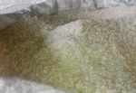
Warga Bandung yang Kena Bencana Bisa Minta Bantuan Beras
16/11/2017
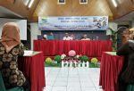
Temu Wirausaha Baru Bidang Perikanan
31/10/2017
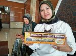
Surat Rekomendasi dari Dispangtan Permudah Pemasaran Produk UKM
31/10/2017
Biar Tak Tertipu, Nih Harga Eceran Tertinggi Beras di Kota Bandung, Kalau Lebih Tinggi Laporkan
19/10/2017
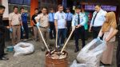
BKIPM Bandung Musnahkan Kerupuk Ikan Ilegal Asal Malaysia
19/10/2017
BKIPM dan Dispangtan Bandung Sidak Ikan Dori Impor
18/10/2017
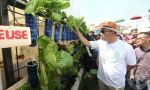
BAM 2017 Kembali Digelar
08/10/2017
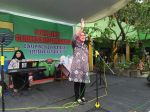
Dispangtan Kota Bandung Sosialisasikan Gerakan Minum Susu dan Makan Telur
05/10/2017
Semua Pasar di Kota Bandung Dilengkapi Mini Lab Food Security
03/10/2017
Elly Wasliah, Kepala Dinas Pertanian dan Ketahanan Pangan Kota Bandung : Pemenuhan Pangan
29/09/2017
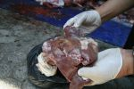
Sapi dan Kambing Kurban di Bandung Terserang Cacing Hati
03/09/2017
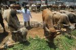
13.401 Hewan Kurban Dipotong di Kota Bandung
01/09/2017
Dinas Pangan dan Pertanian Kota Bandung terjunkan 60 petugas periksa hewan kurban, Selain bertugas memeriksa kesehatan hewan kurban, tim ini juga akan melakukan monitoring semua pedagang hewan kurban
16/08/2017
Dinas Pangan dan Pertanian Kota Bandung terjunkan 60 petugas periksa hewan kurban
16/08/2017
Ribuan Ikan Hias Mejeng di Mal
11/08/2017
Bandung Agri Market, Tempat Nangkringnya Penggemar Urban Farming
10/08/2017
Gelar Bandung Agri Market, Dispantan Bagikan Ratusan Bibit Tanaman Secara Gratis
06/08/2017
Pemkot Bandung Fasilitasi Pemasaran Sayuran dan Tanaman Hias Lewat BAM
06/08/2017
Dispangtan Beri Pelatihan Gratis ke Warga
25/07/2017
DISPANGTAN Bandung Larang Para Jagal Potong Sapi Betina
23/07/2017
Program Urban Farming di Kota Bandung Direspon Baik Oleh Warga
18/07/2017
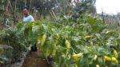
Melongok Kampung Urban Farming di Kelurahan Cibuntu
18/07/2017
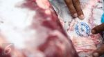
Dinas Pangan Kota Bandung Pastikan Daging Impor Aman Dikonsumsi
28/05/2017
Cerita Kastuba Gantung di Trotoar Kota Bandung
24/05/2017
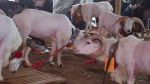
Seratus Lebih Domba di Bandung Beradu Menjadi Raja Kasep, Raja Pepet, dan Ratu Bibit
23/05/2017
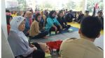
Peternak Domba dan Kambing Ikuti Workshop di Balai Benih Ikan
16/05/2017
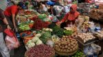
Jelang Ramadhan, Dispangtan Terus Awasi Kenaikan Harga Pangan
10/05/2017
Kadis Pangan dan Pertanian Elly Wasliah: Jelang Ramadan Stok Pangan Kota Bandung Aman
09/05/2017
Penyaluran Cadangan Pangan
26/04/2017
DPP Kota Bandung Tegaskan Penerima Stok Beras Warga Rawan Pangan
25/04/2017
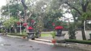
Kota Bandung Pertama di Indonesia Adaptasi Kastuba Gantung
22/04/2017
Pemkot Bandung Buka Program Wirausaha Baru di Bidang Makanan Olahan Hasil Ternak, Minat?
20/04/2017
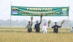
Emil Fokuskan Bandung Timur Sebagai Wilayah Ketahanan Pangan
20/04/2017
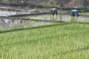
Pusat Pertahanan Pangan Dibangun di Cibiru
19/04/2017
Manfaat Mini Lab Food Security
11/04/2017
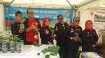
Tanaman hias atau hidroponik hasil budidaya warga setiap RW di Kota Bandung
02/04/2017
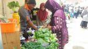
Bibit Cabai Rawit Gratis Banyak Diminati, Dibagikan Gratis Dinas Pangan dan Pertanian
02/04/2017
Dinas Pangan dan Pertanian Ajak Warga Menanam Secara Hidroponik
02/04/2017
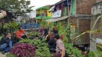
BERKEBUN DI ATAS SUNGAI
09/03/2017
Manusia sebagai Pemimpin
20/02/2017
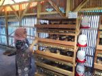
Menengok Peternakan Puyuh yang Menjanjikan di Kawasan Bandung Timur
16/02/2017
Ini Manfaat Tak Terduga dari Ternak Burung Puyuh
16/02/2017
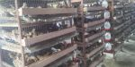
Mau Coba Beternak di Tengah Kota? Coba Burung Puyuh
16/02/2017
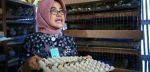
DPP Kota Bandung Kembangkan Budidaya Burung Puyuh
16/02/2017
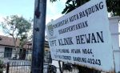
Dispertapa Kota Bandung Sediakan Klinik Hewan Gratis
11/01/2017
Kota Bandung Lanjutkan Progam Urban Farming
08/01/2017
2017, E-Voucher Bantuan Pangan Non Tunai Diterapkan
20/12/2016
Antisipasi Rawan Pangan, ODED MInta Tingkatkan Produksi Beras, Kadispertapa Jalankan One Day No Rice
08/12/2016
50 Pembudidaya Ikan Hias Kota Bandung mengikuti Pelatihan di BPPPUIH Cianjur
02/11/2016
Jaga Kualitas Produk, Kota Bandung Siapakan Mini Lab Security
20/10/2016
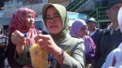
Mini Lab Food Security di Pasar-Pasar Modern dan Tradisional dapat Deteksi Kondisi Makanan
20/09/2016
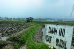
Penyusutan Lahan Pertanian Kota Bandung Capai 200 Ha dalam setahun
18/08/2016
Bandung Agri Market
31/07/2016
Puluhan Anak Sekolah Dasar Antusias Minum Sekaligus Belajar Buat Jus Sayur dan Buah
22/07/2016
Urban Farming, Inspirasi dari Kelurahan Cisaranten Kidul
14/07/2015
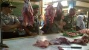
Di Pasar Astanaanyar Harga Stabil dan Stok Aman
15/06/2015
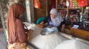
Pemkot Bandung Segera Gelar Operasi Pasar
23/02/2015
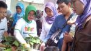
Harga Beras Mahal, Distan KP Imbau Warga Bandung Tak Perlu Panik
23/02/2015
Dinas Pangan dan Pertanian Ajak Warga Menanam Secara Hidroponik
30/11/-0001
Dinas Pangan dan Pertanian Ajak Warga Menanam Secara Hidroponik
30/11/-0001
Artikel
Budidaya Temulawak
Teknologi Jagung Hibrida
Pengendalian Penyakit Tungro
Artikel Lainnya
Link Terkait
LOGIN
Remember me


")


.jpg)